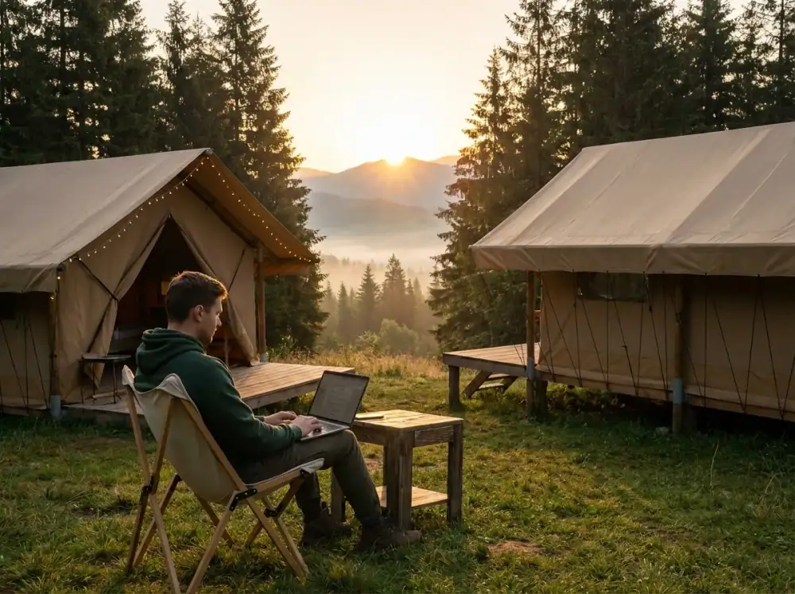
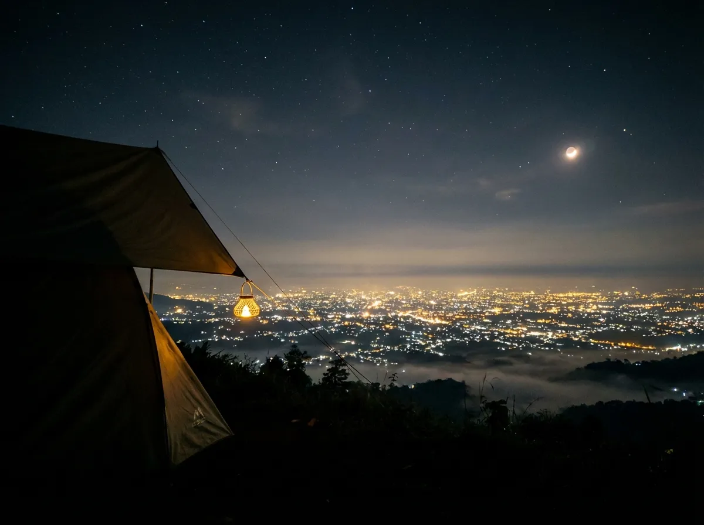

Pernahkah Anda merasa bahwa 24 jam dalam sehari tidak pernah cukup untuk menyelesaikan tumpukan deadline di kantor, hingga akhirnya Anda lupa kapan terakhir kali menghirup udara segar yang bukan berasal dari ventilasi AC gedung?
Rasanya seperti terjebak dalam simulasi yang berulang: bangun pagi, terjebak macet, menatap layar monitor hingga mata perih, lalu pulang saat hari sudah gelap gulita. Banyak orang berkata, "Nanti saja liburannya kalau proyek ini selesai," tapi faktanya, proyek baru akan selalu datang dan rasa lelah Anda justru makin menumpuk menjadi gunung. Jangan sampai Anda mencapai titik burnout total dan baru menyesal ketika kesehatan mental mulai terganggu.
Membayangkan diri Anda duduk di kursi lipat, menyeruput kopi hangat sambil memandang kabut tipis di antara pohon pinus, sementara pekerjaan tetap bisa terpantau lewat WiFi kencang, bukanlah sebuah dosa besar. Justru, ini adalah bentuk strategi bertahan hidup di era modern. Sebelum seluruh slot lahan di Batu Sunrise Camp dikuasai oleh mereka yang lebih dulu sadar akan pentingnya work-life balance, ada baiknya Anda segera mengamankan posisi. Jangan sampai akhir pekan depan Anda hanya bisa gigit jari melihat postingan teman yang sedang asyik healing tanpa beban di media sosial, sementara Anda masih berkutat dengan tumpukan berkas.
1. Evolusi Akomodasi: Mengapa Harus Camping di Tahun 2026?
Dulu, mendengar kata "camping" mungkin yang terlintas di pikiran kita adalah sebuah perjuangan berat: membangun tenda di bawah guyuran hujan, buang air di semak-semak yang gelap, hingga punggung yang sakit karena tidur di atas akar pohon yang keras. Namun, di tahun 2026 ini, zaman sudah banyak berubah. Di Batu Sunrise Camp, filosofi yang diusung adalah kenyamanan tanpa sedikit pun menghilangkan esensi kedekatan dengan alam semesta.
Konsep Semi-Glamping: Mewah Tapi Tetap Membumi
Jika hotel berbintang adalah "zona nyaman" yang statis dan terkadang membosankan, maka Batu Sunrise Camp adalah "kantor kreatif" yang dinamis. Di sini, Anda ditawarkan tempat menginap alternatif yang lebih "bernapas" daripada sekadar villa bertembok beton. Pilihan paketnya sangat beragam, mulai dari sewa lahan mandiri seharga Rp50.000 hingga paket eksklusif "terima beres" yang mencapai Rp850.000.
Analogi sederhananya seperti Anda memilih paket berlangganan internet. Ada yang hanya ingin kuota dasar karena sudah punya perangkat sendiri (Paket Sunrise 1), ada yang ingin paket lengkap dengan langganan streaming (Paket Sunrise 3), hingga paket korporat yang serba ada dan mewah (Paket Exclusive). Fleksibilitas inilah yang membuat banyak kaum urban—terutama para pekerja kreatif dan IT—mulai beralih dari hotel konvensional ke akomodasi alam terbuka yang jauh lebih segar bagi pikiran.
2. Fasilitas Modern: Membawa Kenyamanan Kota ke Area Pegunungan
Salah satu hambatan terbesar orang kota untuk main ke hutan adalah ketakutan akan kehilangan konektivitas dan kenyamanan dasar. Kita sudah terlalu terbiasa dengan kemudahan, dan Batu Sunrise Camp sangat paham akan hal ini. Mereka tidak membiarkan Anda "tersesat" dalam arti yang menyulitkan.
Konektivitas Digital: WiFi Kencang dan Listrik di Setiap Sudut
Di dunia kerja Indonesia yang serba cepat, istilah "urgent" seringkali muncul di waktu-waktu yang tidak terduga, bahkan saat kita sedang izin cuti. Fasilitas WiFi gratis dan colokan listrik di setiap titik tenda di Batu Sunrise Camp adalah fitur penyelamat hidup. Anda tetap bisa mengirimkan revisi dokumen atau melakukan Zoom meeting singkat dengan latar belakang hutan pinus yang asli (bukan virtual background yang sering nge-glitch).
Ini adalah solusi cerdas bagi para digital nomad yang ingin bekerja sambil liburan (workation) tanpa harus merasa waswas baterai laptop habis di tengah jalan. Anda bisa tetap produktif sembari paru-paru Anda berpesta menghirup oksigen murni dari hutan pinus Goa Pinus.
Keamanan dan Pengawasan 24 Jam: Tidur Nyenyak Tanpa Rasa Waswas
Seringkali saat melakukan camping tradisional di gunung, kita merasa khawatir meninggalkan barang berharga di dalam tenda saat sedang jalan-jalan mengeksplorasi sekitar. Di lokasi ini, keamanan adalah prioritas yang tidak bisa ditawar. Dengan adanya petugas jaga selama 24 jam penuh dan sistem pantauan CCTV di berbagai area strategis, Anda bisa meninggalkan tenda untuk berfoto atau makan di kafe dengan perasaan tenang. Ini memberikan rasa aman yang setara dengan tinggal di cluster perumahan elit, namun dengan ventilasi udara yang jutaan kali lebih sehat.
3. Sanitasi Premium: Jawaban Atas "Trauma" Kamar Mandi Hutan
Mari kita jujur satu sama lain, salah satu alasan utama mengapa pasangan atau anak-anak enggan diajak camping adalah masalah toilet. Udara Kota Batu yang sangat dingin di wilayah Dusun Gunungsari bisa membuat siapa saja malas menyentuh air, apalagi jika toiletnya kotor. Namun, Batu Sunrise Camp menyediakan solusi yang sangat manusiawi: Shower Air Hangat.
Terapi Air Hangat di Tengah Dinginnya Malam Batu
Setelah seharian beraktivitas, berfoto di spot instagramable, atau sekadar duduk menikmati pemandangan, mandi dengan air hangat adalah kemewahan yang luar biasa. Toilet yang bersih, terawat secara rutin, dan dilengkapi wastafel cuci piring menjadikan pengalaman menginap di sini terasa sangat beradab. Tidak ada lagi cerita "trauma" kamar mandi gelap, berlumut, dan kotor. Ini adalah standar baru bagi wisata luar ruang di Batu yang inklusif bagi semua kalangan, termasuk bagi mereka yang sangat mementingkan higienitas.
4. Wisata Edukasi & Keluarga: Membangun Karakter di Alam Terbuka
Bagi Anda yang sudah memiliki buah hati, mengajak balita ke alam terbuka seringkali dianggap sebagai tantangan yang berisiko. Namun, membiarkan anak terus-menerus menatap layar gawai atau hanya bermain di playground dalam ruangan setiap akhir pekan juga bukan pilihan yang bijak bagi tumbuh kembang mereka.
Keamanan Area untuk Balita dan Lansia
Lokasi Batu Sunrise Camp yang berada di kawasan strategis Goa Pinus memiliki kontur tanah yang relatif stabil dan area yang sudah tertata dengan rapi menggunakan paving atau rumput yang dipangkas teratur. Pengelola telah membagi zona-zona tertentu agar aman bagi anak-anak kecil yang ingin berlarian tanpa takut terperosok ke jurang.
Mengenalkan mereka pada tekstur tanah, aroma khas pohon pinus saat pagi hari, dan suara kicauan burung adalah bentuk edukasi dini yang sangat mahal harganya. Ini adalah "sekolah alam" yang sesungguhnya, di mana anak-anak bisa belajar tentang ekosistem secara langsung tanpa dibatasi oleh dinding kelas.
Kebijakan Ramah Hewan Peliharaan (Pet-Friendly)
Bagi banyak orang, hewan peliharaan (anabul) adalah bagian tak terpisahkan dari anggota keluarga. Sangat menyedihkan jika harus menitipkan anjing atau kucing kesayangan di penitipan hewan saat kita pergi bersenang-senang. Kebijakan pet-friendly di sini menunjukkan bahwa pengelola memiliki pandangan yang modern dan empatik. Melihat anjing kesayangan Anda berlarian bebas di antara pepohonan dengan ekor yang bergoyang bahagia akan memberikan kepuasan batin tersendiri bagi sang pemilik.

5. Destinasi Berbasis Pemandangan: Sunrise dan City Light Sebagai 'Self-Reward'
Nilai jual utama yang tidak bisa diduplikasi oleh teknologi AI atau filter kamera manapun adalah fenomena alamnya yang autentik. Di sini, Anda mendapatkan dua pemandangan kontras yang sama-sama memukau dalam satu lokasi.
Berburu Sunrise: Momen Emas yang Menghilangkan Stres
Matahari terbit bukan sekadar fenomena astronomi biasa; bagi banyak orang yang sedang lelah secara mental, itu adalah simbol harapan dan lembaran baru. Bangun tidur, membuka ritsleting tenda, dan langsung disambut oleh gumpalan awan putih yang berarak serta sinar jingga yang perlahan menyapu puncak-puncak gunung adalah terapi mental yang sangat ampuh.
Keunggulan utamanya? Anda tidak perlu repot melakukan trekking atau mendaki puncak gunung selama berjam-jam yang menguras fisik. Keindahan kelas dunia itu ada tepat di depan teras tenda Anda. Cukup duduk manis, keajaiban alam itu akan menghampiri Anda sendiri.
Romantisme City Light Malang Raya dari Ketinggian
Saat malam tiba, pemandangan berganti menjadi gemerlap lampu kota (city light) Malang Raya yang terlihat dari ketinggian. Ini adalah momen terbaik untuk duduk bersama pasangan atau teman sejawat di area api unggun eksklusif, menyeduh cokelat hangat, dan membicarakan hal-hal mendalam di luar urusan pekerjaan. Suasana ini menciptakan kedekatan emosional (bonding) yang sangat kuat, yang sulit sekali dibangun di tengah hiruk-pikuk kebisingan dan polusi suara di pusat kota.
6. Sisi Konsumsi: Kafe & Resto yang Menyelamatkan Perut
Tidak semua orang punya bakat alami atau ketelatenan untuk memasak di alam terbuka menggunakan nesting dan kompor gas portable yang kecil. Jika Anda termasuk golongan "kaum rebahan" yang ingin praktis, keberadaan Cafe & Resto di area camping adalah sebuah berkah dari langit.
Menu-menu yang disajikan pun sangat variatif, mulai dari camilan hangat hingga makanan berat yang mengenyangkan, dengan harga yang masih sangat masuk akal bagi kantong wisatawan domestik. Anda bisa memesan makanan dan menikmatinya di area tenda sambil tetap menjaga estetika konten media sosial Anda tanpa perlu repot mencuci peralatan masak yang berminyak.
7. Tips Tambahan Agar Liburan Tidak Berujung Penyesalan
Mengingat lokasi ini berada di area pegunungan yang cukup tinggi, ada beberapa hal teknis yang perlu Anda siapkan agar pengalaman menginap tetap maksimal dan nyaman:
- Jaket Tebal Adalah Wajib: Jangan sekali-kali meremehkan dinginnya malam di Kota Batu, apalagi saat musim kemarau di mana suhu bisa turun drastis ke angka belasan derajat. Pastikan pakaian hangat dan kaus kaki tebal sudah masuk ke dalam tas Anda.
- Kabel Roll Tambahan: Meskipun setiap titik tenda sudah disediakan akses listrik, membawa kabel roll sendiri dengan panjang 3-5 meter akan sangat memudahkan Anda mengatur posisi pengisian daya perangkat elektronik di dalam tenda agar lebih rapi dan aman.
- Reservasi Jauh-Jauh Hari: Ini adalah poin paling krusial. Batu Sunrise Camp adalah salah satu destinasi paling populer di Malang Raya. Jangan nekat datang langsung (on the spot) saat akhir pekan jika tidak mau kecewa karena lahan sudah penuh dipesan. Hubungi admin via WhatsApp di 0812-3922-5692 minimal satu minggu sebelumnya.
Penutup: Saatnya Memberi Ruang untuk Paru-Paru Anda Bernapas
Hidup bukan hanya tentang mengejar target bulanan yang tidak pernah ada habisnya atau memanjat tangga karir setinggi langit. Ada kalanya kita harus menekan tombol pause sejenak, melepas sepatu pantofel atau hak tinggi yang menjepit kaki, dan merasakan kembali hangatnya rumput dan dinginnya udara pegunungan.
Menunda waktu rehat hanya akan membuat Anda merasa seperti robot yang perlahan kehabisan daya baterai. Batu Sunrise Camp hadir menawarkan kemewahan yang sederhana: udara bersih tanpa polusi, pemandangan indah yang menenangkan mata, dan fasilitas modern yang tidak menyulitkan. Jangan biarkan momen berharga bersama orang tercinta atau waktu untuk mencintai diri sendiri terlewat begitu saja hanya karena rasa ragu. Alam punya cara unik untuk menyembuhkan lelahmu, dan mungkin, jawaban atas segala kegundahanmu selama ini tersimpan rapi di antara deretan pohon pinus di Dusun Gunungsari. Sampai jumpa di depan api unggun!
8. FAQ Relevan dengan Topik
Adiel Ebert Nakula Shandy
Senior Outdoor Enthusiast & Web Developer. Penggemar aktivitas alam dan kuliner camping.